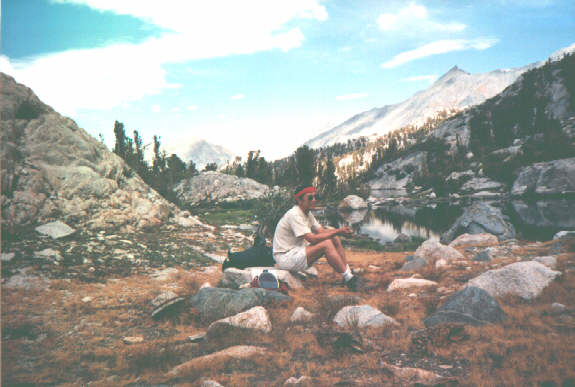

In August of 1995, my friend Jeff Oxley and I had the
adventure of our lives. The trip went well in the beginning. We
started out from Onion Valley on the eastern side of the Sierra
Nevada, hiked up the Kearsarge Pass, and spent the first night
next to the beautiful Kearsarge Lakes. The next day, we hiked
pass the Bullfrog Lake. Here is a view:
We worked hard to get up to Glen Pass and looked down on the
lakes below it.
We spent the next night at Rae Lakes, and talked to a ranger
about our plan to go up to Sixty Lakes Basin, then hike into
Gardner Basin, and come out by the way of Charlotte Lake. He was
very encouraging. So we went up to Sixty Lakes Basin and camped
there.

The next day, Jeff and I went off trail up to a pass and
looked down on Gardner Basin.
We scrambled down and found an old abandoned trail that was
depicted on an old topo map. We were happy that we came to this
isolated area where we were the only human beings. Here is Jeff
the next morning, with Gardner Peak in the background.
Pretty soon we lost the old trail and had to bushwack our way across dense shrubs or scramble among rocks. We made our way slowly down Gardener Basin.Unfortunately, we missed the turn that we needed to take to get out on the south side of Gardner Basin. Instead, we went too far west. By the time we realized we had missed the turn, we were down in a steep canyon and we realized that if we try to go back on our planned route, we were not likely to get out of the mountains in time for Jeff to catch his plane back to Minneapolis. His wife would get very worried. So we plunged forward the next day, going down this steep trailless canyon until we came out on the south fork of the King's River, on western side of the Sierras. Along the way we had to slide down a steep slope on our butts. We first threw down our packs, but they got stuck on rocks in a nearby water fall. Thus, we came out of the wilderness with only our fanny packs and what we carried in our pockets, having lost most of our backpacking equipments. Our car was on the east side of this mighty Sierra Nevada range, while we were on the west side.
Fortunately, we had our credit cards. A phone call to a taxi company in Fresno got us transportation out of King's Canyon National Park. (It was the most expensive taxi ride I've ever taken.) That night we stayed at a Holiday Inn next to the Fresno airport. The next day we rented a car, drove around the southern end of the Sierras to retrieve my car at the trailhead near Lone Pine. We managed to return to my house only a day later than we had planned originally.